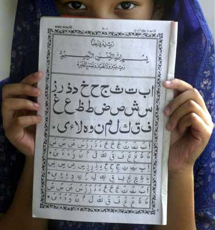
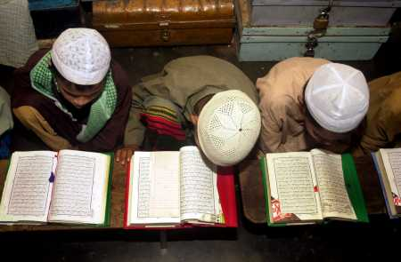

|
|
Religious Extremism and Nationalism in
Bangladesh
Part Three
By Bertil Lintner
The RSO's main military camp was located near the
hospital that the Rabitat had built at Ukhia. At the time, the RSO acquired a
substantial number of Chinese made RPG-2 rocket launchers, light machine-guns,
AK-47 assault rifles, claymore mines and explosives from private arms dealers
in the Thai town of Aranyaprathet near Thailand's border with Cambodia, which
in the 1980s emerged as a major arms bazaar for guerrilla movements in the
region. These weapons were siphoned off from Chinese arms shipments to the
resistance battling the Vietnamese army in Cambodia, and sold to any one who
wanted, and could afford, to buy them. (37) The Bangladeshi media gave quite
extensive coverage to the RSO buildup along the border, but it soon became
clear that it was not only Rohingyas who underwent training in its camps.
Many, it turned out, were members of ICS and came from the University of
Chittagong, where a "campus war" was being fought between Islamic
militants and more moderate student groups. (38) The RSO was, in fact, engaged
in little or no fighting inside Burma.
There was also a more moderate faction among the Rohingyas in Bangladesh, the
Arakan Rohingya Islamic Front (ARIF), which was set up in 1986, uniting the
remnants of the old RPF and a handful of defectors from the RSO. It was led by
Nurul Islam, a Rangoon-educated lawyer. But it never had more than a few dozen
soldiers, mostly equipped with elderly, UK-made 9mm Sterling L2A3 sub-machine
guns, bolt action .303 rifles and a few M-16 assault rifles.39 In 1998, it
became the Arakan Rohingya National Organization (ARNO), maintaining its
moderate stance and barely surviving in exile in Chittagong and Cox's Bazar.
The expansion of the RSO in the late 1980s and early 1990s, and the
unprecedented publicity the group attracted in the local and international
media, prompted the Burmese government to launch a massive counter-offensive
to "clear up" the border area. In December 1991, Burmese troops
crossed the border and attacked a Bangladeshi military outpost. The incident
developed into a major crisis in Bangladesh-Burma relations, and by April 1992
more than 250,000 Rohingya civilians had been forced out of Arakan.
Hardly by coincidence, this second massive exodus of Rohingyas occurred at a
time when Burma was engulfed in a major political crisis. The pro-democracy
National League for Democracy (NLD) had won a landslide victory in a general
election in May 1990, but the country's military government refused to convene
the elected assembly. There were anti-government demonstrations in the
northern city of Mandalay, and the ruling Burmese junta was condemned
internationally.
The Rohingya refugees were housed in a string of makeshift camps south of
Cox's Bazar, prompting the Bangladeshi government to appeal for help from the
international community. The United Nations High Commissioner for Refugees,
UNHCR, came in to run the camps and to negotiate with the Burmese government
for the return of the Rohingyas. In April 1992, prince Khaled Sultan Abdul
Aziz, commander of the Saudi contingent in the 1991 Gulf War, visited Dhaka
and recommended a Desert Storm-like action against Burma, "just what [the
UN] did to liberate Kuwait." (40)
That, of course, did never happen, and the Burmese government, under pressure
from the United Nations, eventually agreed to take most of the refugees back.
But an estimated 20,000 destitute refugees remain in two camps between Cox's
Bazar and the border. In addition, an undisclosed number of Rohingyas, perhaps
as many as 100,000-150,000, continue to live outside the UNHCR-supervised
camps. There is little doubt that extremist groups have taken advantage of the
disenfranchised Rohingyas, including recruiting them as cannon fodder for Al-Qaeda
in Afghanistan and elsewhere. In an interview with the Karachi-based
newspaper, Ummat on September 28, 2001, bin Laden said: "There are areas
in all parts of the world where strong jihadi forces are present, from Bosnia
to Sudan, and from Burma to Kashmir." (41) He was most probably referring
to a small group of Rohingyas on the Bangladesh-Burma border.
Many of the Rohingya recruits were given the most dangerous task in the
battlefield, clearing mines and portering. According to Asian intelligence
sources, Rohingya recruits were paid 30,000 Bangladeshi taka ($525) on joining
and then 10,000 ($175) per month. The families of recruits killed in action
were offered 100,000 taka ($1,750). (42) Recruits were taken mostly via Nepal
to Pakistan, where they were trained and send on to military camps in
Afghanistan. It is not known how many people from this part of Bangladesh -
Rohingyas and others - fought in Afghanistan, but it is believed to be quite
substantial. Others went to Kashmir and even Chechnya to join forces with
Islamic militants there. (43)
In an interview with the CNN in December 2001, American "taliban"
fighter, John Walker Lindh, relate that the Al-Qaeda-directed ansar
(companions of the Prophet) brigades, to which he had belonged in Afghanistan,
were divided along linguistic lines: "Bengali, Pakistani (Urdu) and
Arabic," which suggests that the Bengali-speaking component - Bangladeshi
and Rohingya - must have been significant. (44) In early 2002, Afghanistan's
foreign minister, Dr. Abdullah, told a Western journalist that "we have
captured one Malaysian and one or two supporters from Burma." (45)
In January 2001, Bangladesh clamped down on Rohingya activists and offices in
Chittagong and Cox's Bazar, most probably in an attempt to improve relations
with Burma. Hundreds were rounded up, and the local press was full of reports
of their alleged involvement in gun- and drug-running. Rohingya leaders
vehemently deny such accusations, and blame local Bangladeshi gangs with
high-level connections for the violence in the area. But the Rohingyas were
forced to evacuate their military camps, which had always been located on the
Bangladesh side of the border. Recent reports from the area suggest that HUJI
and other Bangladeshi Islamic groups have taken over these camps, with the
main base being the one the RSO used to maintain near the Rabitat-built
hospital in Ukhia. (46)
4. Attacks on Secular Muslims and Religious Minorities
What now is Bangladesh - and initially East Bengal and then East Pakistan -
has undergone some dramatic demographic changes during the past sixty years.
According to the 1941 Census of India, Hindus made up 28% of the population of
then East Bengal. Twenty years later, when East Pakistan was well-established,
the number had decreased to 18.5%. More left during the liberation war in
1971, when the Pakistani army targeted Hindus especially. By 1974, only 13.5%
of the population of independent Bangladesh was Hindu. According to the latest
estimate, the figure is now down to 9%. (47) At the same time, large numbers
of Buddhists from the Chittagong Hill Tracts - Bangladesh's other main
religious minority - have fled to India.
The fall of the Awami League and the murder of Mujib-ur Rahman in August 1975,
followed by the military takeover by Maj.-Gen. Zia in November of that year,
ushered in a new era of Bangladeshi nationalism, where the religious and
ethnic minorities had little or no place. Mujib's immediate successor,
Khondkar Mushtaq Ahmed, who was a senior member of the Awami League but known
for his Islamic and pro-Pakistan leanings, began to conclude his speeches with
Bangladesh Zindabad (long live Bangladesh, but "zindabad" is a
Persian word) rather than the war cry of the liberation struggle, Joi Bangla
(both words being Bengali). This soon became common practice in government
announcements and radio broadcasts.
A shift in foreign policy was also noticeable. Bangladesh's first government
had emphasized friendship with India and the Soviet Union. Zia's government
steered Bangladesh closer to Pakistan, China and Saudi-Arabia. (48) Pakistan's
intelligence agency, the Inter-Services Intelligence (ISI) became active in
Bangladesh again, working closely with its local counterpart, the Directorate
General of Forces Intelligence (DGFI). Pakistan never fully recovered from the
loss of East Pakistan, and never forgave India for the role it played in the
birth of Bangladesh by sending troops to fight the Pakistani army.

The idea of Bangladesh rejoining Pakistan was out of the question after the
extremely bloody liberation war, in which millions died. But Pakistan was
determined to regain its influence over its former eastern part and,
especially, to keep Indian influence there at an absolute minimum. Zia's
policies, including allowing the Jamaat to return, served these interests, and
the Pakistanis, quite naturally, emphasized the main bond that united the two
countries: Islam.
Historian M.G. Kabir argues that Zia's propagation of a new brand of
Bangladeshi nationalism was a scheme "to simultaneously consolidate
feelings of nationhood, provide a series of symbols for unifying the country,
contribute to the enthusiasm with which nation-building activities are
pursued, and, ultimately maintain the identity and integrity of Bangladesh as
a nation-state independent of India." (49) In a posthumously published
article written by Zia, he lists seven factors which he considers to be the
bases of Bangladeshi nationalism: territory, people irrespective of religion,
Bengali language, culture, economic life, religion, and the legacy of the 1971
liberation war. (50) There is an obvious contradiction between "people
irrespective of religion" and "religion," and that has since
then been the dilemma for Bangladesh's non-Muslim population. Ershad's
declaration of Islam as the state religion made it clear that
"religion" in a Bangladeshi context means Islam.

Bangladesh's Islamic identity has strengthened over the years, and after the
October 2001 election there has been a marked increase in the number of
attacks on non-Muslim population groups. These attacks appear to have been
prompted by a desire to build a real "nation state," free from
minorities, as well as motivated by political revenge. Amnesty
International reported in December 2001: "Hindus in Bangladesh have
tended to vote for the Awami League. They have therefore been the target of a
political backlash by supporters of parties opposing Awami League." In
Ziodhara, one of the worst affected villages, several hundred Hindu villagers
left the area. In another village, Deuatala Bazar, gangs of young men wielding
sharp weapons reportedly went from door to door telling Hindus to "go
away." (51) In Chandaikona Bazar another youth gang damaged Hindu statues
and looted the temple. (52)
The Amnesty report continues: "Human rights organizations in Bangladesh
believe over 100 women have been subjected to rape. Reports persistently
allege that the perpetrators have been manly members of the BNP and its
coalition partner Jamaat-e-Islami." (53) As a result, thousands of
Bangladeshi Hindus have fled to India, often leaving their belongings and land
behind. The exact number of refugees is uncertain, as they tend to blend in
with the largely Hindu population of the Indian states of West Bengal, Assam
and Tripura.
Other religious minorities have also been targeted. In December 2001, a
Bangladeshi newspaper reported that young women from 50 Christian families in
Natore were living in fear of hoodlums who would roar past their huts on
motorcycles at night. The hoodlums demanded ransom of 10,000-20,000
Bangladeshi taka ($175-350) from men in the village - or their daughters. The
villagers had also had their crops taken away after the October election. (54)
In April 2002 a well-known Buddhist monk, Ganojyoti Mohasthobir, was murdered
by a group of thugs who demanded he paid them "infidel protection
tax." (55)
But also moderate Muslims have become victims. On November 22, 2001 prominent
journalist and writer Shahriar Kabir, was arrested at Dhaka international
airport on his return from Kolkata. He had been to India to cover the plight
of the Hindus who had fled persecution in Bangladesh, and had his video tapes,
film and camera confiscated by the police at the airport. He was held in
custody for 19 days before he was released on bail. In March 2002, two staff
members of the NGO Proshika ("a Center for Human Development"), Omar
Tarek Chawdhury and Ajhar-ul Hoque, were arrested on allegations that they had
been in possession of "documents" relating to attacks against
Hindus. (56)
Their arrest came only weeks after the Danish and German ambassadors in Dhaka
had asked the Bangladesh government to "take immediate steps to stop all
sorts of repression and attacks on the country's religious and other
minorities." (57) But there are no signs that this is about to happen. On
the contrary, the future for the country's religious and ethnic minorities
appears bleak as "Bangladeshi nationalism" is becoming synonymous
with a stronger Muslim identity - and Islamic groups are becoming increasingly
fierce in their public statements and actions.
Citations:
37. Bertil Lintner, "Tension Mounts in Arakan
State," Jane's Defence Weekly, October 19, 1991. The story was based on
interview with Rohingyas and others in the Cox's Bazaar area in 1991. I also
visited a Rohingya army camp near the border with Burma.
38 Interviews and observations I made when I visited the border in 1991.
39 Jane's Defence Weekly, October 19, 1991.
40 For an account of the 1991-92 Rohingya refugee crisis, see Burma in Revolt,
pp. 397-8.
41 See also Jim Garamone, "Bin Laden and the Al-Qaeda Network,"
American Forces Press Service, September 21, 2001: "Al-Qaeda has cells in
Algeria, Egypt, Morocco, Turket, Jordan, Tajikistan, Uzbekistan, Syria, China,
Pakistan, Bangladesh, Malaysia, Burma, Indonesia, the Philippines, Lebanon,
Iraq, Saudi-Arabia, Kuwait, Bahrain, Yemen, Libya, Tunisia, Bosnia, Kosovo,
Chechnya, Dagestan, Sudan, Somalia, Kenya, Tanzania, Azerbaijan, Eritrea,
Uganda, Ethiopia, and in the West Bank and Gaza."
42 Jane's Intelligence Review, May 2002.
43 Subir Bhaumik, op. cit.
44 Transcript of John Walker interview, CNN, December 21, 2001.
45 Bertil Lintner, "A Recipe for Trouble," Far Eastern Economic
Review, April 4, 2002. The comment was made to the editor of the Far Eastern
Economic Review, Michael Vatikiotis.
46 I visited the area, including Ukhia, in March 2002.
47 The figures are based on information from Bangladesh's Ministry of
Planning. Bureau of Statistics. See also Jaideep Saikia, Islamic Resurgence in
Bangladesh, paper disseminated by bangladesherdak@yahoogroups.com
in May 2002.
48 M.G. Kabir, op. cit., pp. 196-197.
49 Ibid., p. 199.
50 Ibid., p. 199.
51 Amnesty International, December 2001.
52 Ibid.
53 Ibid.
54 Human Rights Congress for Bangladesh Minorities, Give ransom or Girl, order
hoodlums: 50 Christian families of Natoore subjugated by nightmare, December
8, 2001.
55 The Daily Janakantha (Bangladesh), April 23, 2002.
56 Amnesty International, Press release ASA 13/005/2002, March 15, 2002.
57 News From Bangladesh, March 8, 2002.
---------------------
Mr. Lintner writes for Far Eastern Economic Review, a Hong Kong based
publication of The Wall Street Journal. This paper was presented in an
international workshop on Religion and Security in South Asia at the Asia
Pacific Center for Security Studies in Honolulu, Hawaii. August 19-22, 2002.
Move
to part-4
|
|
|